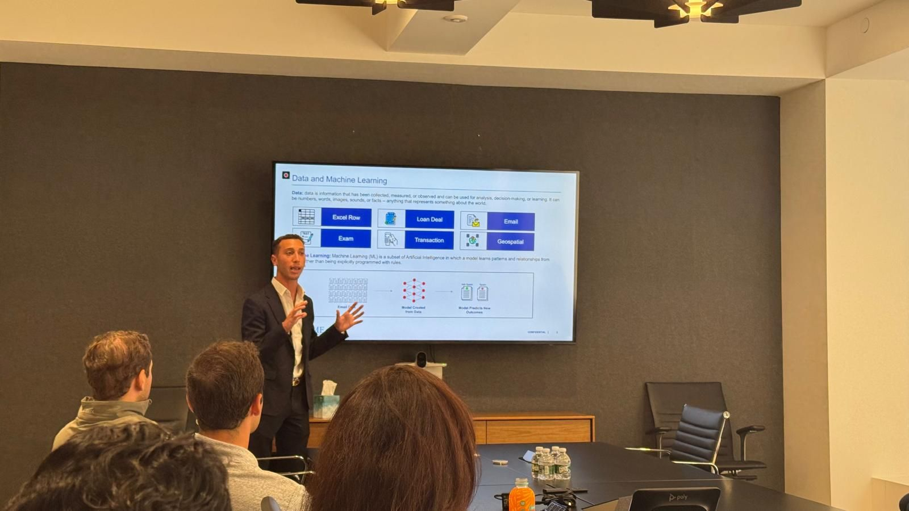

My professional experience includes internships and entrepreneurial ventures in finance and technology.

Prime Finance - Machine Learning Engineer Intern
Location: New York, NY
Duration: May 2025 - August 2025
Designed and implemented an AI-powered loan prioritization system to score hundreds of real estate deals weekly, reducing initial screening time and helping the investment team focus on high-potential opportunities.
Generated synthetic data using probabilistic modeling and domain heuristics to address sparse historical records and ambiguous labels, increasing training dataset coverage and enabling more stable model performance across loan types.
Built a custom active learning loop combining pseudo-labeling and uncertainty sampling to iteratively expand the synthetic dataset, enabling robust ML model training with minimal manual labeling.
Trained, evaluated, and deployed supervised ML models (XGBoost, logistic regression) through reproducible pipelines, delivering a production-ready tool adopted by both technology and investment teams for deal evaluation.
MarketDig - Co-founder, Data Engineer, and Software Engineer
Location: New York, NY
Duration: May 2024 - December 2024
Collaborated with a team of two to develop a market research tool for aspiring small business owners.
Specialized in architecting technical solutions by decomposing 5 key categories—competition, demographics, business environment, costs, and mapping—into modular, solvable components, leading to a streamlined development process.
Spearheaded the identification and integration of data sources and APIs, managed the data ETL (extraction, transformation, and loading) processes, and designed and implemented data storage solutions, enabling efficient data access and utilization.
Contributed to full-stack development using the MERN stack, with a focus on backend JavaScript programming.
The Bespoke Banker - Client Engagement and Financial Analysis Intern
Location: New York, NY
Duration: July 2023 - August 2023
Directly consulted with clients to understand their borrowing needs before conducting an in-depth analysis of their financial spreads to extrapolate and present compelling company narratives, enabling 10 clients to secure loans with optimal terms.
Developed comprehensive financial spreads with formula-driven ratios in Excel, including income statements, balance sheets, and cash flows, to evaluate liquidity, solvency, and profitability, serving as a critical input for lending decisions.